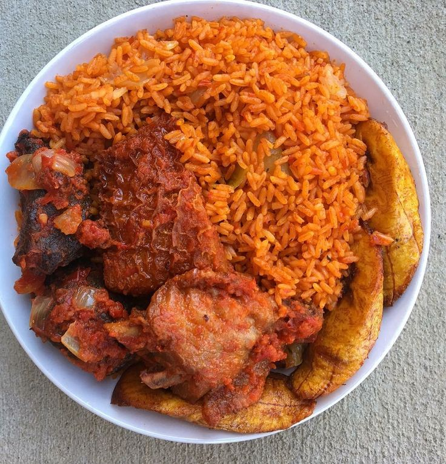

Jollof Rice
Jollof rice is a celebrated one-pot dish from West Africa, known for its distinctive smoky flavor and vibrant red color. It's a staple at parties and gatherings, made with long-grain rice, tomatoes, onions, and a blend of spices.
Ingredients
- 2 cups long-grain rice
- 400g plum tomatoes, blended
- 1 large onion, chopped
- 1 scotch bonnet pepper, to taste
- 1/4 cup vegetable oil
- 3 tbsp tomato paste
- 2 tsp curry powder, 1 tsp dried thyme
- 2 bay leaves
- Salt and stock cubes to taste
- 2.5 cups chicken or vegetable stock
Instructions
Show cooking steps
- Heat oil in a large pot and sauté the chopped onions until soft. Add the tomato paste and fry for 5 minutes.
- Add the blended tomatoes, scotch bonnet, thyme, curry powder, and bay leaves. Cook until the sauce is reduced and thick.
- Stir in the washed rice, ensuring it's well-coated with the sauce. Add the stock, salt, and stock cubes.
- Bring to a boil, then reduce heat to low, cover the pot tightly (with foil and a lid), and let it simmer for 20-30 minutes until the rice is cooked through.
- Fluff the rice with a fork and serve hot.
Video Tutorial
Country of Origin
Jollof rice is a cultural icon in West Africa, with countries like Nigeria, Ghana, and Senegal having their own beloved variations.